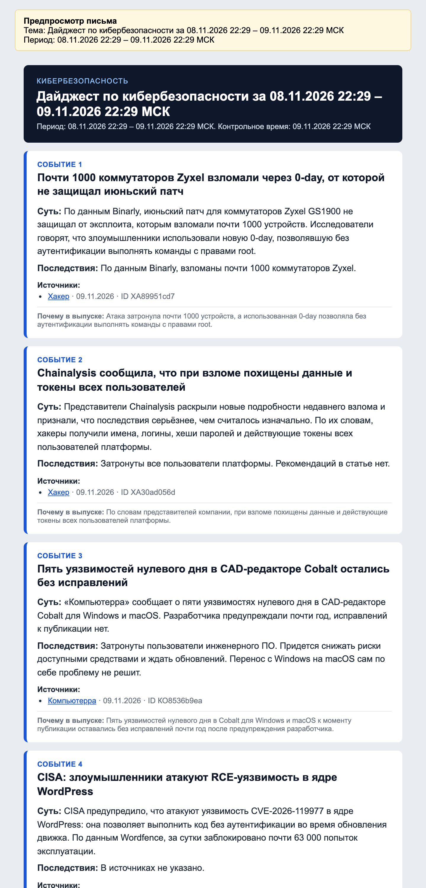
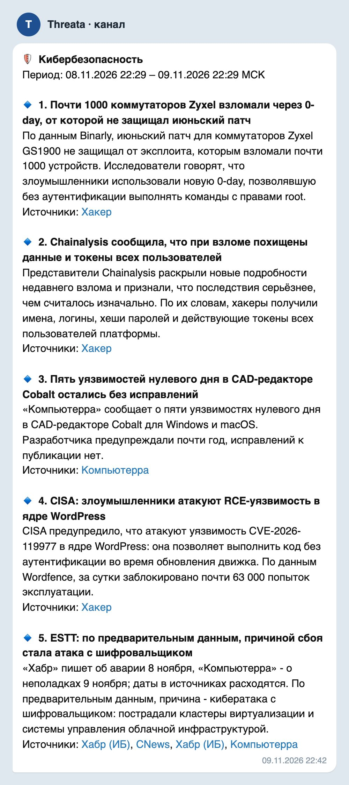
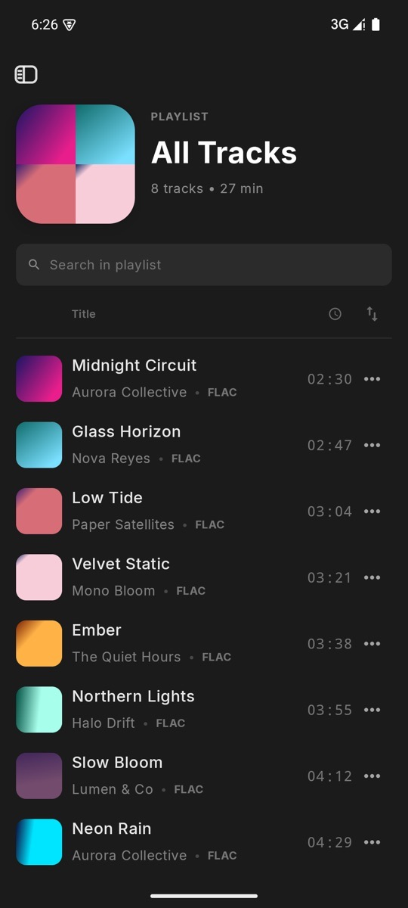
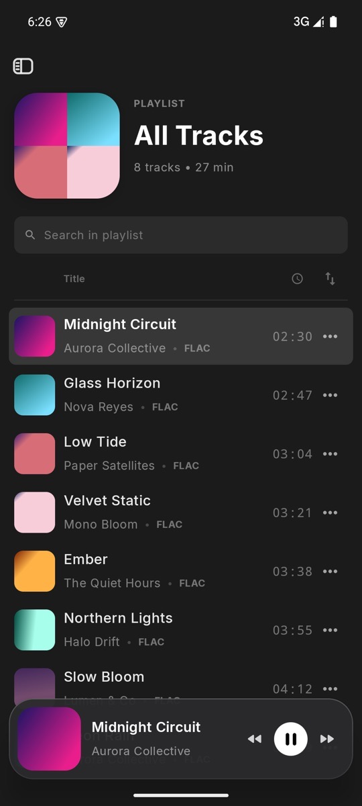
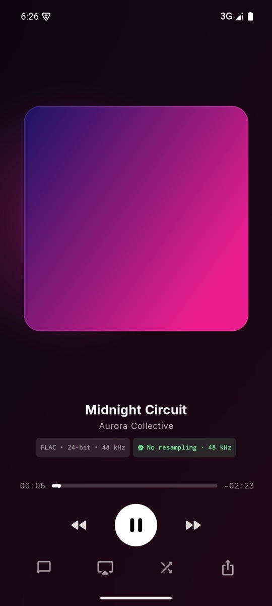
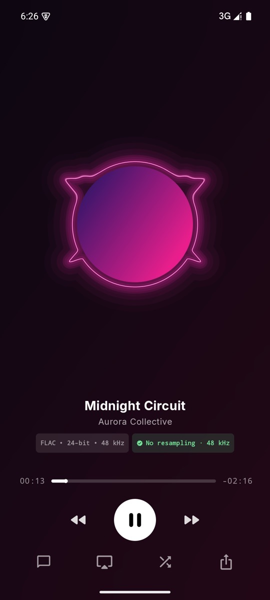
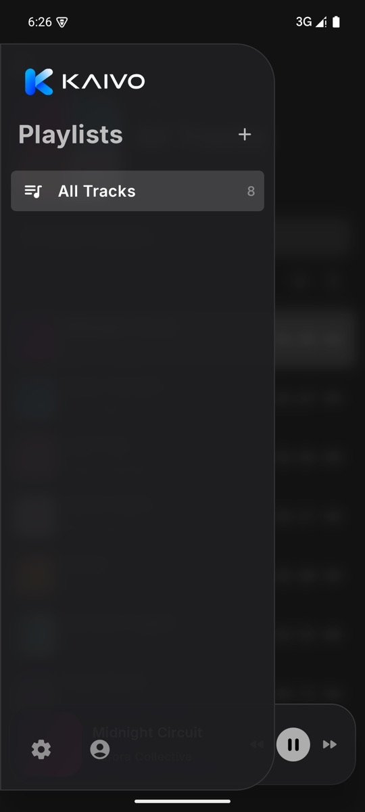

Портфолио · бизнес-аналитик
Никита Коровин
Разбираю продукт от проблемы пользователя до требований, которые можно отдать в разработку. Здесь два моих проекта, описанные как настоящие продукты: процессы в BPMN 2.0, требования и UML, разбор причин сбоев и план запуска.
Навыки из резюме
Где посмотреть каждый навык
Строки взяты из раздела «Ключевые навыки» резюме. В ячейках ссылки на конкретные артефакты ниже.
| Навык | Threata | KAIVO |
|---|---|---|
| Моделирование процессов, BPMN, As-Is / To-Be | As-Is мониторинга, To-Be выпуска, размещение рекламы | As-Is прослушивания, подписка, подборка дня |
| UML | Use Case, состояния, последовательность, ER-модель | Use Case, состояния подписки, классы |
| Требования, Use Cases, User Stories | UC-05, US-05, FR и NFR с приоритетами MoSCoW | UC-09, US-06, FR и NFR, правила App Store |
| Узкие места и корневые причины: Исикава, «5 почему» | Исикава и два реальных инцидента | Исикава и дефект синхронизации |
| Подготовка ТЗ и артефактов для разработки | gap-анализ и этапы запуска | gap-анализ и сверка с кодом |
| SQL, Python, REST API | ER-модель SQLite, API ядра, интеграции по HTTPS | C API звукового ядра; требования к интеграции StoreKit 2 |
| LLM-агенты | Конвейер на LLM с проверкой фактов кодом и защитой от prompt injection | В продукте не используются |
Кейс 1 · хакатон IT-Fest 2026
Threata
Каждое утро присылает пять главных событий кибербезопасности за сутки: с источниками, проверенными числами и датами. В анализе продукт готовится к публичному запуску и зарабатывает на рекламе.
Специалист по ИБ каждое утро вручную обходит 10-20 источников, тонет в дублях и рекламе и всё равно пропускает важное.
Код собирает RSS, отсекает всё старше суток и считает баллы. Модель отбирает, склеивает и пересказывает события. Числа и даты пересказа код сверяет с источником.
Разбор кейса и требования, критерии отбора источников, сценарии сбоев, приёмка и проверка качества. Аналитика продукта на этой странице.
- 28 источников проверены по критериям, в работе 5 лучших
- Реальный выпуск 09.11.2026: из 230 материалов отобрано 5 событий
- Учебный набор организаторов: 0 нарушений, 12 из 12 исключений верны
- Сбой модели больше не выдаётся за «новостей нет»

Аудитория и деньги
Читает новости с телефона по дороге на смену. Важно понять, касается ли это его стека. Ценит ссылку на первоисточник.
Отдельного ИБ-отдела нет. Нужна выжимка «что важно для бизнеса» в почте. Интересен вендорам средств защиты.
Следит за отраслью, готовится к собеседованиям. Откликается на рекламу курсов, конференций и вакансий.
Продукт бесплатный для читателя. Деньги приносят спонсор выпуска, нативный блок, баннер на сайте и рубрика вакансий. Реклама только прямая, без рекламных сетей и чужих скриптов: ИБ-аудитория не простит вредоносную ссылку.
Выручка в месяц = выпуски × проданные слоты × цена слота Цена слота = охват выпуска / 1000 × CPM для ИБ-аудитории Себестоимость = токены модели × тариф + сервер + рассылка Замер 09.11 = 162 вызова модели, ~290 тыс. токенов, 13 минут
Процессы: как было и как будет
«5 почему»: дайджест сказал «событий нет», хотя новости были
Нашёлся на аудите перед защитой: у модели кончился лимит запросов, а выпуск вышел с кодом 0 и текстом «подходящих событий нет». Скрипт организаторов ошибку не увидел.
| Почему | Ответ |
|---|---|
| Почему событий нет? | Все публикации выпали из отбора |
| Почему выпали? | Модель не ответила (HTTP 429), а публикация без ответа считалась не прошедшей отбор |
| Почему это не различалось? | У запуска не было состояния «сбой»: только «есть события» или «нет», код 0 в обоих случаях |
| Почему не было состояния? | Требования описывали только успешный сценарий |
| Почему только успешный? | Исключительные потоки (модель недоступна, ответ пустой или не JSON) не разбирались при постановке |
Решение: четыре статуса запуска (ok, warn, empty, failure), код выхода 2 и запрет рассылки при сбое, повторы, кеш ответов и резервная модель. Второй разбор в анализе: письма не уходили, потому что сеть закрывала SMTP. После него все интеграции переведены на HTTPS.
Требования
US-05 Как администратор, я хочу, чтобы при сбое модели рассылка не уходила, чтобы читатели не получили пустой или ложный выпуск. Сценарий: модель не ответила при формировании выпуска Допустим ключ модели задан, а сервис модели возвращает ошибку Когда система формирует выпуск То статус запуска равен failure, код выхода 2 И в выпуске написано, что он не сформирован, а не «новостей нет» И вызов отправки возвращает отказ
| ID | Требование | MoSCoW | Статус |
|---|---|---|---|
| FR-03 | Отбор по теме, склейка дублей, ранжирование, топ-5 | Must | есть |
| FR-05 | Проверка чисел и дат пересказа по тексту источника | Must | есть |
| FR-09a | Статусы запуска и рассылка только после успешного запуска | Must | есть |
| FR-10 | Запуск выпуска по расписанию | Must | к запуску |
| FR-12 | Кампании, креативы и токен erid | Must | к запуску |
| FR-15 | Раздельные согласия: персональные данные и реклама | Must | к запуску |
| NFR-04 | Текст новости передаётся модели как данные; ответ ограничен JSON-схемой | Must | есть |
UML
Что нужно до публичного запуска
| Область | Сейчас | Нужно |
|---|---|---|
| Запуск | Вручную из панели или бота | Каждый день в 08:00 МСК |
| Реклама | Нет | Слоты, erid, учёт кликов, отчёты |
| Выпуск с замечаниями | Рассылается сразу | Утверждение редактором |
| Данные подписчиков | Почта и хеши паролей | Политика ПДн, согласия, сервер в РФ |
| API ядра | Без авторизации, только локально | Закрыть токеном |

Кейс 2 · свой продукт
KAIVO
Плеер для своей Hi-Res коллекции на macOS, iOS, iPadOS и Android. Общее звуковое ядро на Rust: звук и эквалайзер одинаковые на всех устройствах. В анализе продукт выходит в App Store и Google Play по подписке.





Штатные плееры не играют DSD и пересэмплируют звук. На каждом устройстве свой плеер, и эквалайзер под наушники настраивается заново.
Один плеер на четырёх платформах, одно ядро обработки звука, одинаковые фильтры эквалайзера. История и подборки считаются на устройстве.
Владелец продукта: идея, требования, приоритеты, приёмка по видеозаписям дефектов, исследование АЧХ наушников для пресетов.
Freemium. Бесплатно: библиотека, плейлисты, тексты песен, эквалайзер на 7 полос. KAIVO Pro: параметрический эквалайзер и пресеты наушников, DSD и bit-perfect, ежедневные подборки Moods.
LTV = цена в месяц × (1 − 15% комиссии) × срок подписки
Оплата в App Store российскими картами недоступна, поэтому основные рынки за пределами РФ. Интерфейс уже на 10 языках.
Процессы
Причины
«5 почему» по реальному дефекту: визуализатор отставал от звука в беспроводных наушниках. Корень оказался в требовании «визуализатор в такт музыке» без допуска в миллисекундах. Решение: приложение запрашивает задержку устройства у системы и умеет калиброваться по микрофону, а в требования добавлен допуск 40 мс.
Требования
US-06 Как подписчик, я хочу восстановить покупку на новом телефоне, чтобы не платить второй раз. Сценарий: новая установка с тем же аккаунтом магазина Допустим у пользователя активна годовая подписка И он установил KAIVO на новое устройство с тем же Apple ID Когда он нажимает «Восстановить покупки» То Pro-функции открываются без повторной оплаты
UML
Сверка требований с кодом
Перед релизом я сверил требования с реализацией. Вот что нашлось:
| Находка | Почему важно | Что делать |
|---|---|---|
| Нет встроенных покупок | Без них нельзя продавать Pro (правило 3.1.1) | StoreKit 2 и Google Play Billing, экран подписки |
| Временный идентификатор macOS-версии | С ним не выйти в App Store, а от него зависит папка с данными | Постоянный идентификатор и перенос библиотеки |
| Удаление плейлиста с файлами стирает треки и из других плейлистов | Пользователь теряет музыку, которую не собирался удалять | Сохранять треки, нужные другим плейлистам |
| Нераспознанный пресет эквалайзера импортируется молча | Пользователь не понимает, что пошло не так | Сообщение с причиной |
Метод
Как я работаю
Один и тот же путь в обоих проектах. Нарисован в той же нотации, что и схемы выше.
Ещё проект
Notchy
Панель в вырезе экрана MacBook: статус ИИ-агентов, музыка, запись экрана, буфер обмена, конвертация файлов перетаскиванием. Открытый репозиторий с релизами.